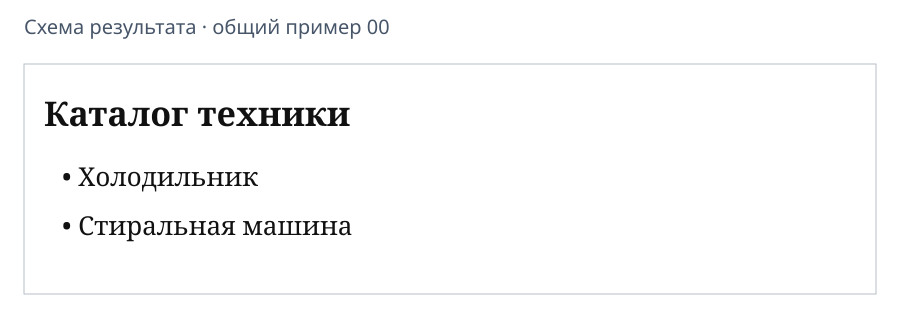
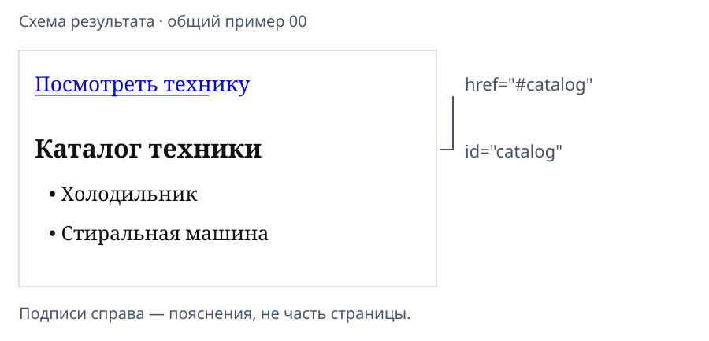

Проверка HTML-страницы, списки и ссылки
Индивидуальные задания
Для этой пары индивидуальные задания не опубликованы
Покажите первую страницу
Вторая пара веб-блока. Откройте свой VariantNN-web/index.html в редакторе и Chrome. Покажите результат первой работы: тексты своего варианта и изображение.
По просьбе преподавателя измените абзац, сохраните и обновите страницу. Если что-то не готово, начните с исправления по первой инструкции.
Все примеры ниже используют учебный вариант 00 «Техника дома» этой пары. В своём VariantNN-web заменяйте названия и надпись ссылки данными личного варианта.
Сегодня добавим всего два элемента: список и ссылку на него. Работаем в прежнем файле.
Учебный вариант 00
Вариант 00 хранится рядом со статьёй. Вариант 00 студентам не назначается; для своей работы используйте данные своего номера.
Так выглядит маленький каталог

В своём листе найдите название каталога и первые два названия позиций. На этом этапе они будут обычным списком. Карточки с изображением слева или справа появятся при изучении CSS.
Соберите список из ul и li
В редакторе найдите изображение главной страницы. После него, перед </body>, добавьте:
<h2 id="catalog">Каталог техники</h2>
<ul>
<li>Холодильник</li>
<li>Стиральная машина</li>
</ul>
Замените: заголовок каталога и два названия — данными своего варианта.
| Обозначение | Роль |
|---|---|
h2 |
Заголовок каталога |
ul |
Весь список без нумерации |
li |
Один пункт списка |
id="catalog" |
Имя цели для будущей ссылки |
li находятся внутри ul. Сначала закрываем последний li, затем ul.
Проверка: сохранить → обновить. Видны заголовок и два пункта с маркерами, как на схеме.
Так работает ссылка

Синяя надпись — ссылка. Стрелка на схеме поясняет переход; рисовать её на странице не нужно.
В короткой странице прокрутка может быть почти незаметна. Проверим также изменение адреса.
Сделайте ссылку через a
После короткого пояснения, перед заголовком главной вставьте:
<p><a href="#catalog">Посмотреть технику</a></p>
Замените: надпись — строкой «Название перехода к каталогу» своего варианта. href="#catalog" оставьте.
a— ссылка; текст внутри — надпись для нажатия.href="#catalog"— переход к элементу сid="catalog"в этом же документе.pвыводит ссылку отдельным абзацем.
id пишется без # и используется один раз. Вложенные теги закрываются в обратном порядке: </a>, затем </p>.
Проверьте переход
- Сохраните HTML, обновите Chrome.
- Нажмите свою ссылку.
- Проверьте: в конце адреса появился
#catalog. - Если каталог находился ниже видимой области, браузер прокрутит к нему.
Если переход не работает: сравните href="#catalog" у ссылки и id="catalog" у заголовка посимвольно.
Это ссылка внутри главной страницы. Отдельные страницы, цветная кнопка и переход к форме пока не нужны.
Сверьте порядок элементов
h1 — название приложения
p — короткое пояснение
p с a — ссылка на каталог
h2 — заголовок главной
p — описание
img — основное изображение
h2 с id="catalog" — название каталога
ul с двумя li — позиции каталога
Это схема для сверки, не код для вставки. Сохраните прежний head; второй body не создавайте.
Что показать к концу пары
- Список из двух названий своего каталога.
- Ссылку на этот каталог и появление
#catalogв адресе. - В коде — список
ul, его пунктыli, ссылкуaи цельid.
Запишите одну исправленную ошибку и способ проверки. Если ошибок не было, запишите результат проверки перехода. Сохраните всю папку проекта.